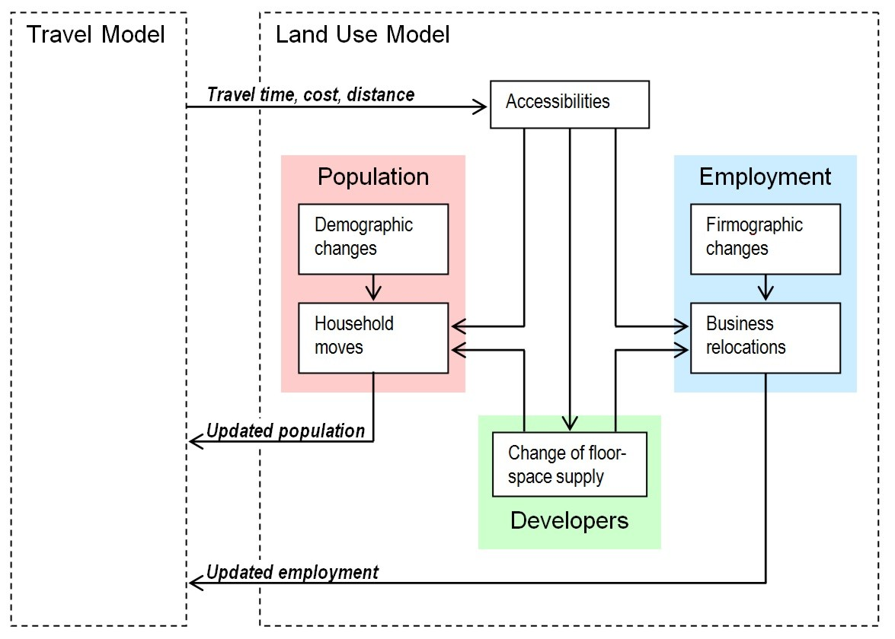

Design principles of land use models
Summary
The design of land-use models varies widely, however, there are a couple of common design principles found in most spatial land use models in operation to date. The introduction to land-use modeling describes the more general concept of integrating land-use models with travel demand models.
# Common Land Use Model Design
Many land use models are designed based on a similar rationale as shown in the graphic below. Even though there are many variations in model design, this graphic helps understanding the most common land use model concepts. A common design principle is the distinction of three major players on the land use market: population, employment, and developers. While population and employment are using dwellings or floorspace to locate, developers build additional dwellings or floorspace based on demand and available developable land.

Common land use model design elements
Accessibilities commonly influence location decisions of population, employment, and developers. The updated locations of population and employment are then fed back into the travel model. Commonly, the simulation of households is done in two steps. Demographic changes are nonspatial changes, such as ageing, marriage, birth of a child, divorce, death, change of educational level, buying a car, receiving a driver’s license, etc. Household moves represent the spatially explicit relocation of households. Many demographic changes trigger household moves. For example, a child who leaves the parental household needs to find a dwelling to establish its own household.
A similar distinction is commonly made for the simulation of employment. Demographic changes of firms are simulated in the module called firmographic changes, modeling non-spatial events such as business establishment, growth, decline, or closure. Business relocation is the move of the entire firm or of a part of the firm. Some firmographic events, such as business establishment and growth, may trigger a business move. Commonly, non-spatial and spatial events are distinguished because they are simulated differently. Often, aspatial events are steered by an economic model simulating employment and population growth or decline. Another distinction is that land use policies may be tested that aim at influencing location behavior. Rarely, policies are tested that influence demographic changes. Hence, spatial modules are designed to be sensitive to a large variety of policy changes, whereas nonspatial modules tend to model events that happen to population or employment.
# Land Use Modules
It is common in land use modeling to distinguish decision-making with spatial implications (such as household relocation) from demographic changes without spatial implications (such as aging). While this distinction is not required, it is often made because spatially explicit choices are often modeled with more scrutiny than non-spatial events. Given that events with spatial impact are of higher interest for integrated Land Use-Transport Modeling, it is warranted to put more effort into modeling behavior that affects the location of households and employment.
# Household Relocation
The household relocation module deals with households moving to a different dwelling and the housing search of newly created households. Newly created households include children leaving their parental household, couples who divorce or separate and establish a second households, and households that move into the study area from outside, and therefore, are considered new households.
Commonly, relocation is based on utilities of alternative new housing locations. These utilities include the price of the new dwelling (either rent or mortgage payments), other dwelling attributes, such as size or age, and zonal attributes, such as accessibilities or quality of schools. Bid-rent approaches tend to relocate households until every household has maximized their utility, while discrete-choice explicitly keep some disequilibrium assuming that households would not move if the utility of another dwelling is only marginally higher.
Most land use models constrain household relocation by the available housing stack, reflecting that more desirable areas tend to have very low vacancy rates.
# Demographic Change
The module modeling demographic change includes all changes that may happen to households and people except household relocation. These changes commonly are modeled by transition probabilities, such as using the Markov Model, rather than applying discrete-choice or bid-rent methodologies. The following table includes the most common non-spatail demographic events.
| Household Events | Person Events |
|---|---|
| Birth of a child | Aging |
| Marriage/Co-habitation | Death |
| Divorce/Separation | Change of work place |
| Child leaves parental household | Change of school |
| Purchase of a vehicle | Obtain or lose driver's license |
| Change of household income | Change of person's income (if modeled at person level) |
| Immigration of a household | ... |
| Outmigration of a household | |
| ... |
Some person events trigger household events. For example, the death of a person dissolves a one-person household, and the birth of a child will change the housing preferences of a household.
# Real-Estate Development
The module Real-Estate Development represents developers who build real estate in response to demand. This includes personal households who may "develop" only one house to live in themselves. Real estate includes both residential dwelling and non-residential floorspace. While residences are commonly counted in number of dwellings (as in most cases one household lives in one dwelling), non-residential floorspace is often measured in square feet. This allows to subdivide an office building into space for multiple firms.
When developers decide where to build what kind of new floorspace, they look at the current demand, which commonly expressed as vacancy rate in a neighborhood, where small vacancy rates suggest high demand. In the decision-making process for developers to find a location for their new real estate, usually the same utility functions are used as for household or business relocation, as developers attempt to anticipate the preferences of future residents. Discrete choice models often use Logit Models to model developers' decisions.
This module also includes the deterioration and renovation of real estate. Deterioration commonly is a function of time, with vacant real estate often deteriorating at a faster rate than occupied real estate. Renovation, on the other hand, is a conscious decision of the real-estate owner to upgrade the property. This step may be modeled by transition probabilities using Markov Models (more common), or decisions to renovate real estate may be modeled in a discrete choice concept (less common).
# Employment Relocation
Employment relocation is comparable to household moves: Utilities commonly drive the decisions to select a new location. While household relocation is usually done at the household level (and not at the person level), employment relocation sometimes is represented by moves of employees and sometimes by moves of establishments. The latter is more complex for a couple of reasons:
- Most employment data are collected by number of employees, not by number of establishments.
- Firms are highly heterogenous in size, ranging from one-person firms to enterprises with several thousand employees in one location. Therefore, firms need to be treated microscopically, i.e. a synthetic population of firms has to be created and updated by the model for future years. Employees, on the other hand, can be represented in an aggregate model, reducing the complexity substantially.
- A relocating firm needs to find sufficient continuous floorspace at the new location (unless the firm intends to split up into two establishments, which is rare). If employees are used for modeling relocation, every employee of the same industry type is assumed to require the same amount of non-residential floorspace.
While the representation of establishments is significantly more complex, results tend to be more realistic as the decision-making unit is represented in the model. Modeling moves of single employees tend to smooth out employment distributions much more than possible in reality, where employees are bundled in firms[1]. However, for many analyses, the differences between modeling jobs or establishments are not significant enough to warrant the additional effort of implementing an establishment-based model. As a consequence, land-use models representing establishments have remained the minority. Examples of land use models that represent establishments include van Wissen (2000)<ref name=vanWissen2000">vanWissen Leo (2000) A micro-simulation of firms: applications of concepts of the demography of the firm. In: Papers in Regional Science 79. 111-134, Kahn et al 2002[2], Maoh and Kanaroglou (2005)[3], De Bok (2007)[4] and Moeckel (2009)[5].
Regardless of whether firms or employees are modeled, non-residential floorspace is commonly provided as the real-estate supply for employment relocation. Given the diversity of floorspace types, many models distinguish at least office and other floorspace. Some models further distinguish agricultural land (which may be converted into developed land, which could affect agricultural employment), retail floorspace, warehouses/distribution centers and industrial floorspace.
# Firmographic Change
In line with the distinction between moves and demographics for households, employment modeling also tends to keep relocations separate from the demographic of firms, also called firmography. The benefit of this distinction lies in applying different modeling methods for the two. Employment relocation often is modeled by Logit Models, while firmographic changes are commonly modeled using transition probabilities in Markov Models.
Firmographic changes commonly represented include the following events:
| If firms are modeled | If employees are modeled |
|---|---|
| Establishment of a new firm | Employment growth |
| Closure of a firm | Employment decline |
| Growth of a firm | Immigration of employment |
| Decline of a firm | Outmigration of employment |
| Immigration of a firm | |
| Outmigration of a firm |
Firmographic events are important to represent changes to the spatial distribution of employment. All events shown in the table above immediately affect the distribution of employment, and thereby, have an effect on person trips and truck trips.
# References
Moeckel, Rolf (2013) Firm location choice vs. employment location choice in microscopic simulation models. In: Pagliara, F., de Bok, M., Simmonds, D. and Wilson, A. (Eds.): Employment location in cities and regions: models and applications. Advances in Spatial Science Series. Springer Verlag. 223-242. ↩︎
Khan A S, Abraham J E, Hunt J D (2002) Agent-based micro-simulation of business establishments. In: Proceedings of the Congress of the European Regional Science Association (ERSA), August 27 - 31, Dortmund. ↩︎
Maoh H F, Kanaroglou P S (2005) Agent-based firmographic models: a simulation framework for the city of Hamilton. In: PROCESSUS Second International Colloquium on the Behavioural Foundations of Integrated Land-use and Transportation Models: Frameworks, Models and Applications, June 12 - 15, Toronto. Online resource: http://www.civ.utoronto.ca/sect/traeng/ilute/processus2005/PaperSession/Paper08_Maoh-Kanaroglou_Agent-basedFirmographicModels_CD.pdf ↩︎
De Bok, Michiel (2007) Infrastructure and Firm Dynamics: A Micro-simulation Approach (TRAIL Research School, Delft) ↩︎
Moeckel, Rolf (2009) Simulation of firms as a planning support system to limit urban sprawl of jobs. In: Environment and Planning B: Planning and Design vol. 36. 883-905. ↩︎